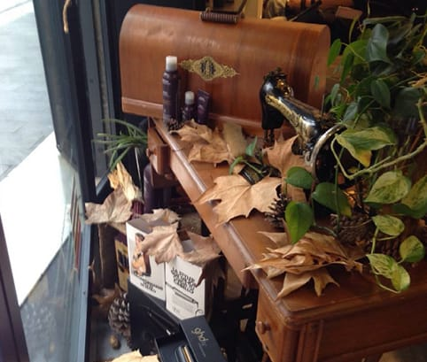
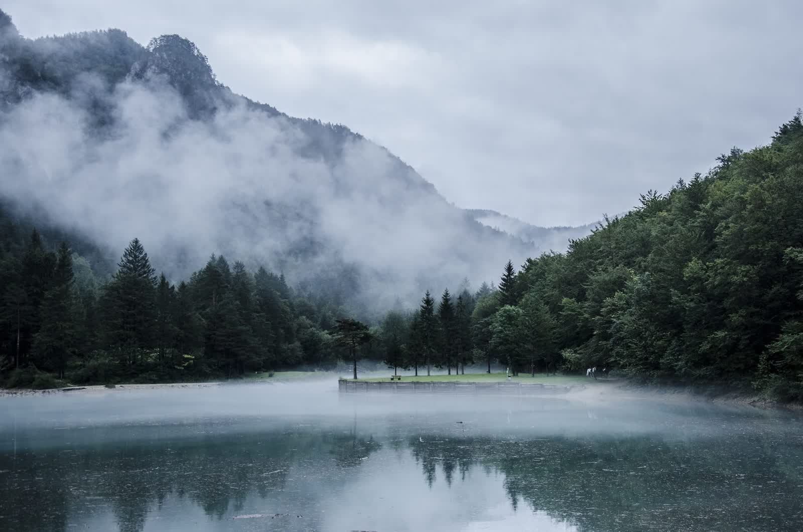
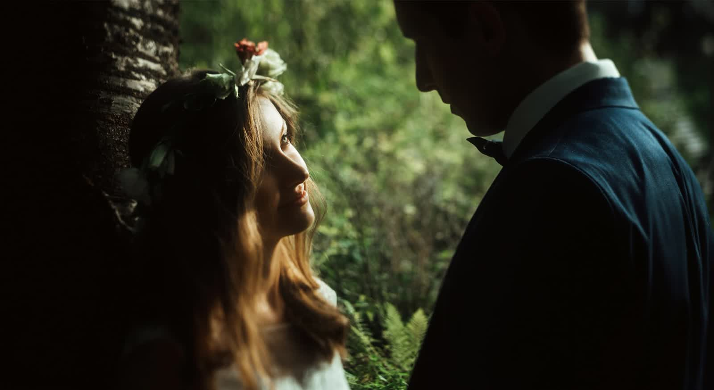

Conectar belleza, bienestar y respeto por el medio ambiente. Cuatro pilares que definen cada visita a Trasquilón.
Antes de cualquier servicio, dedicamos tiempo a conocerte. Realizamos un diagnóstico completo del cabello y el cuero cabelludo, teniendo en cuenta tus rasgos únicos, tu estilo de vida y tus preferencias.
Creamos looks personalizados, no masivos. Te enseñamos cómo mantener tu cabello en casa para que el resultado dure.

Queremos que cada visita sea una experiencia. Por eso incluimos un masaje relajante en puntos de energía, cuello y cuero cabelludo, con aceites esenciales que puedes elegir según tu estado de ánimo.
Mientras esperas, te ofrecemos café, cortado o infusión natural de cortesía. El salón es tu espacio de desconexión.

Nuestro lavado no es un trámite: es un tratamiento. Incluye un masaje capilar con aromaterapia, tratamiento de vapor con mascarilla que abre los folículos para una mejor absorción de los productos.
Utilizamos exclusivamente productos Aveda, formulados con esencias puras de flores y plantas.

Buscamos estilos prácticos y fáciles de mantener en casa. Todos los productos de acabado están incluidos en el precio, sin cargos ocultos.
Antes de despedirte, te enseñamos las técnicas de secado y cuidado para que puedas replicar el resultado por tu cuenta.
Trabajamos con Aveda porque compartimos su visión: la belleza no debe estar reñida con el respeto al planeta.
Más del 90% de los ingredientes de los aceites esenciales Aveda tienen certificación orgánica.
Los envases Aveda contienen un mínimo del 80% de material reciclado. Primera marca de belleza con 100% energía eólica.
Productos libres de crueldad animal, con certificación Cradle to Cradle de sostenibilidad.